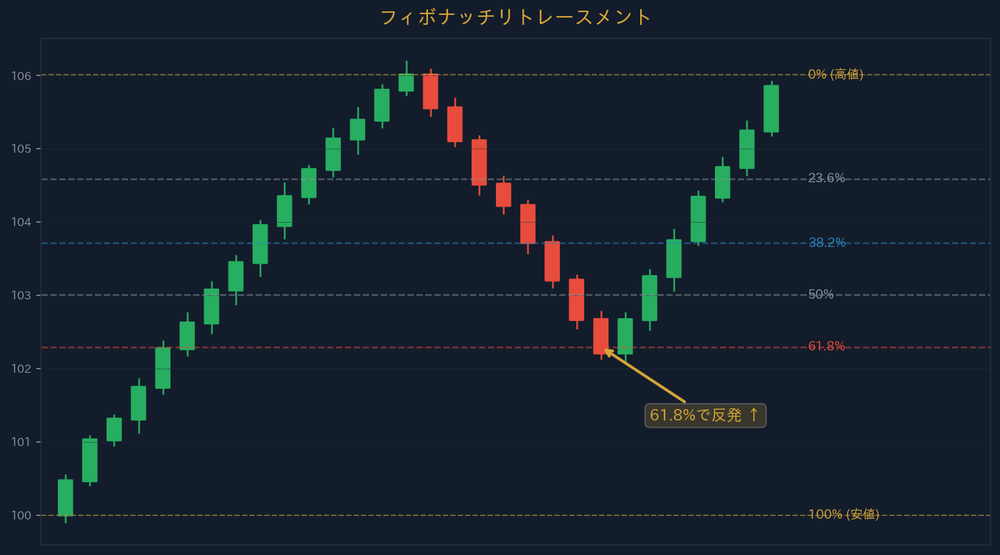

← Back
Section 12 — フィボナッチ
←
1 / 9
→
SECTION 12
フィボナッチ
Fibonacci ── 自然界の比率を相場に応用
URIKAI Trading Academy
フィボナッチ数列と比率
主要比率：
23.6%、38.2%、50%、61.8%、78.6%
エクステンション：
127.2%、161.8%、200%、261.8%
市場参加者が意識するためS/Rとして機能しやすい
38.2%＝浅い押し、50%＝中間、
61.8%＝最重要
61.8%を超えるとトレンド転換の可能性が高まる
POINT：61.8%（黄金比）は最も注目されるレベル。

フィボナッチ | URIKAI Trading Academy
エクステンション・コンフルエンス
エクステンション＝利確ターゲットの推定ツール
リトレースメント＋S/Rの重なり＝
コンフルエンス（合流）
フィボ＋トレンドライン＋ローソク足パターン＝高信頼度トレード
SL：リトレースメントの次のレベルの少し外側
TP：エクステンションレベルを段階的に使用
POINT：単独ではなく他ツールとのコンフルエンスを狙うことで精度が大幅に向上する。
フィボナッチ | URIKAI Trading Academy
フィボナッチリトレースメントの描き方
上昇トレンド：
安値（始点）→ 高値（終点）
に描画
下降トレンド：
高値（始点）→ 安値（終点）
に描画
主要レベル：
38.2%
（浅い押し）、
50%
（中間）、
61.8%
（深い押し）
強いトレンドでは38.2%で反転しやすい
弱いトレンドや転換期には61.8%以上まで戻ることがある
POINT：61.8%を超えるとトレンド転換の可能性が高まる。78.6%を超えたらほぼ転換。
フィボナッチエクステンション
エクステンション ＝
利確ターゲット
の推定ツール
主要レベル：
127.2%、161.8%、200%、261.8%
例：上昇→38.2%押し→反転 → TP1＝127.2%、TP2＝161.8%
エリオット波動の第3波や第5波のターゲット推定にも使用
S/Rと一致するエクステンションレベルは信頼性が高い
フィボナッチの実践的活用
フィボ ＋ S/R ── 両方が重なる価格帯は
最強のコンフルエンス
フィボ ＋ トレンドライン ── 両方が一致するポイントでの反転確率が高い
SLの設定：リトレースメントの次のレベルの少し外側
TPの設定：エクステンションレベルを段階的に使用
リスクリワード比を事前に計算してからエントリーを判断
POINT：フィボナッチ単独ではなく、他の分析ツールとの「コンフルエンス」を狙うことで精度が大幅に向上する。
まとめ
基本比率
23.6%, 38.2%, 50%, 61.8%, 78.6%
リトレースメント
押し目/戻りの深さを測定
エクステンション
利確ターゲットの推定
コンフルエンス
S/R、MA、パターンとの合流で信頼性向上
フィボナッチ | URIKAI Trading Academy
確認テスト ── 3問正解で受講完了
Q1. フィボナッチの最も注目されるリトレースメントは？
23.6%
61.8%
Q2. フィボナッチエクステンションは何に使う？
損切りの設定
利確ターゲットの推定
Q3. コンフルエンスとは？
複数の根拠が重なるレベル
1つの指標だけで判断すること
回答を確定する
フィボナッチ | URIKAI Trading Academy
Section 12 Complete
Next → マルチタイムフレーム分析
Home
URIKAI Trading Academy
← → キーでページ移動